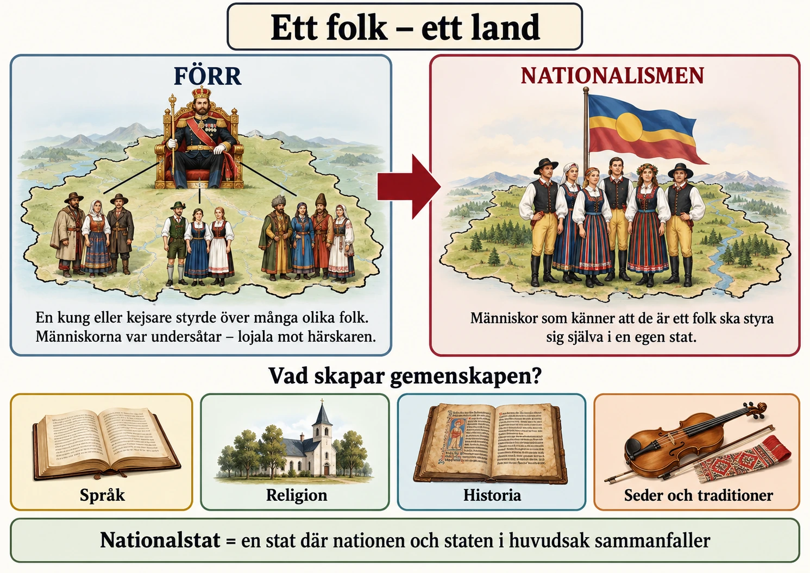

🎯 Kärnpunkter
- Nationalism är idén om ett folk – ett land.
- En nation är en grupp människor som känner att de hör ihop.
- Målet var en nationalstat, där nationen och staten är ungefär samma sak.
- Nationalismen skapade ett starkt vi, men också ett de.
Nationen blir viktigare
Tänk dig Europa i början av 1800-talet. De flesta människor var undersåtar till en kung eller en kejsare. Det betyder att de skulle lyda och vara lojala mot sin härskare. Ett rike kunde vara mycket stort, och där bodde ofta många olika folk. De talade olika språk, hade olika religioner och firade olika traditioner. Rikets gränser följde alltså inte var de olika folken bodde.
Under 1800-talet växte en ny idé fram som vände på detta. Idén kallas nationalism, och den kan sammanfattas i fyra ord: ett folk – ett land. En grupp människor som känner att de hör ihop kallas en nation. Nationalisterna tyckte att nationen var den viktigaste gemenskapen. Människor som tillhörde samma nation skulle tillsammans få bestämma över sitt land. För många blev frågan om vilket folk de tillhörde viktigare än frågan om vilken kung som styrde dem.
Målet blev därför att skapa en nationalstat. Det är en stat där nationen och staten i stort sett är samma sak, alltså ett folk som lever tillsammans i ett eget land. Men i verkligheten var det svårt att få till. Människor hade flyttat och blandats under flera hundra år. I många områden bodde därför människor med olika språk, religioner och traditioner sida vid sida.
👁 Titta efter
- Rutan FÖRR — en kejsare styr över tre grupper i olika folkdräkter.
- Rutan NATIONALISMEN — ett folk står tillsammans under en egen flagga.
- De fyra små rutorna — språk, religion, historia och traditioner skapar gemenskapen.
- Kärnpoängen — förr hörde du till en härskare, nu till ett folk.

Folksjälen – vad förenar ett folk?
Vad är det egentligen som gör att människor känner att de hör till samma folk? Det finns inget enkelt svar. Under 1800-talet började man tala om att varje folk hade en egen folksjäl. Man menade att människorna i en nation hade ett gemensamt sätt att tänka, leva och se på världen.
Språket var särskilt viktigt. Om man talade samma språk kunde man läsa samma böcker och tidningar och förstå samma berättelser. Även religion, historia, seder och bruk, musik och högtider sågs som delar av folkets gemensamma kultur.
Därför började många samla in gamla visor, sagor och berättelser. I de tyska staterna gav bröderna Grimm ut en samling folksagor som skulle visa vad som var äkta tyskt. Historiker och författare skrev om nationens historia och lyfte fram personer och händelser som folket kunde vara stolta över. Nationalismen byggde alltså inte bara på en gemenskap som redan fanns. Den hjälpte också till att skapa och stärka känslan av att höra ihop.
Ett ”vi” skapar också ett ”de”
Nationalismen kunde ge människor en stark känsla av gemenskap. Människor som aldrig hade träffats kunde ändå känna att de tillhörde samma ”vi”. De kunde vara stolta över samma språk, samma historia och samma kultur.
Men när man skapar ett ”vi” skapar man lätt också ett ”de”. Om nationen byggde på ett visst språk eller en viss religion kunde de som inte passade in ses som utomstående. En person kunde ha bott på samma plats hela livet men ändå räknas till ett annat folk, bara för att personen talade ett annat språk eller hade en annan tro.
Nationalismen hade alltså två sidor. Den kunde förena människor, men den kunde också skapa motsättningar, särskilt i riken där många olika folk levde tillsammans. Därför blev nationalismen en av de starkaste krafterna i 1800-talets Europa, en idé som kunde rita om kartan.
Under 1800-talet förändrades människors sätt att tänka kring vilket samhälle de tillhörde. Tidigare hade de flesta framför allt varit undersåtar till en kung eller kejsare. Ett rike kunde bestå av många olika folk med olika språk, religioner och traditioner, och gränserna mellan stater följde därför inte gränserna mellan folken.
Nationen blir viktigare
Nationalismen utgick från en annan tanke: ett folk – ett land. Människor som uppfattade sig tillhöra samma folk borde också höra samman politiskt. Den gemenskapen kallades en nation. En nation är alltså en grupp människor som upplever att de hör samman och har något gemensamt som skiljer dem från andra grupper.
Nationalism är idén att nationen är en viktig gemenskap och att människor som tillhör samma nation bör kunna forma sitt samhälle tillsammans. Under 1800-talet blev denna tanke allt starkare. För många människor blev frågan om vilket folk de tillhörde viktigare än vilken furste eller kejsare som styrde över det område där de bodde.
Målet för många nationalister blev därför att skapa en nationalstat – en stat där nationen och staten i huvudsak sammanfaller. Tanken var att de människor som uppfattade sig som ett folk också skulle leva inom samma stat. I verkligheten var detta ofta svårt. Människor hade flyttat och blandats under århundraden, och många områden beboddes av människor med olika språk, religioner och traditioner.
Folksjälen – vad förenar ett folk?
Men vad är det egentligen som gör att människor känner att de tillhör samma folk? Det finns inget enkelt svar på den frågan. Under 1800-talet växte tanken fram att varje folk hade en särskild folksjäl. Med det menade man att människor inom samma nation hade ett gemensamt sätt att tänka, leva och förstå världen.
Språket blev en viktig del av denna gemenskap. Människor som talade samma språk kunde läsa samma tidningar och böcker och ta del av samma berättelser. Religion kunde också skapa samhörighet. Gemensam historia, seder och bruk, musik, högtider, sagor och andra traditioner började lyftas fram som uttryck för folkets gemensamma kultur.
Därför började människor under 1800-talet samla in gamla visor, sagor och berättelser. I de tyska staterna gav bröderna Grimm ut folksagor som skulle visa vad som var äkta tyskt. Historiker och författare skrev om nationens förflutna och sökte efter personer och händelser som kunde bli symboler för folket. Nationalismen handlade alltså inte bara om att människor redan hade en gemensam identitet. Den kunde också bidra till att skapa och förstärka känslan av att människor hörde samman.
Ett ”vi” skapar också ett ”de”
Nationalismen kunde skapa en stark känsla av gemenskap. Människor som aldrig hade träffat varandra kunde ändå uppleva att de tillhörde samma större ”vi”. De kunde känna stolthet över samma språk, historia och kultur och uppleva att de hade ett gemensamt samhälle att bygga.
Men när ett ”vi” skapas uppstår lätt också ett ”de”. Om nationen definierades genom ett visst språk, en viss religion eller vissa traditioner kunde människor som inte passade in i denna bild betraktas som utomstående. En person kunde leva i samma område som sina grannar men ändå anses tillhöra ett annat folk eftersom personen talade ett annat språk eller hade en annan religion.
Nationalismen hade därför två sidor. Den kunde förena människor som tidigare levt uppdelade och skapa en stark känsla av gemenskap. Samtidigt kunde den skapa motsättningar mellan olika grupper, särskilt i riken där flera olika folk levde tillsammans. Därför blev nationalismen en av 1800-talets starkaste politiska krafter, en idé som kunde förändra Europas karta. Hur det gick till handlar nästa del om.
Kom nationen före nationalismen?
Det verkar självklart att nationalismen växte fram för att det redan fanns nationer, alltså folk som länge hade känt sig som tyskar, italienare eller svenskar och som till slut krävde egna stater. Men många historiker menar att det i stor utsträckning var tvärtom: det var nationalismen som skapade nationerna. Frågan om vad som kom först, nationen eller idén om nationen, är en av de mest omdiskuterade inom modern historieforskning, och svaret påverkar hur vi förstår hela 1800-talet.
Folksjälens filosof
Idén om folksjälen fick sin mest inflytelserika form hos den tyske filosofen Johann Gottfried Herder i slutet av 1700-talet. Herder menade att varje folk hade en egen Volksgeist, en folkanda, som tog sig uttryck framför allt i språket men också i sånger, sagor och seder. För Herder var språket inte bara ett redskap för att kommunicera utan själva bäraren av ett folks sätt att tänka. Ett folk som förlorade sitt språk förlorade därmed sig självt.
Herder själv var ingen aggressiv nationalist. Han såg mångfalden av folk som något värdefullt, som blommor i en trädgård. Men hans tankar fick stor spridning och blev en grund för dem som ville bygga stater kring språk och kultur. Idéerna fick också fäste i Sverige, där Götiska förbundet bildades 1811 och diktare som Erik Gustaf Geijer hyllade vikingar och odalbönder som bärare av en äkta svensk själ.
Sagor med fransk accent
Bröderna Jacob och Wilhelm Grimm är ett bra exempel på hur detta arbete gick till i praktiken. När deras sagosamling kom ut 1812 presenterades den som uråldrigt tyskt folkgods, insamlat från enkla människor på landsbygden. Senare forskning har visat att bilden är mer komplicerad. Flera av de viktigaste berättarna var bildade kvinnor ur medelklassen, och några av dem hade fransk härkomst. Berättelser som i dag uppfattas som typiskt tyska hade alltså ibland vandrat över språkgränser. Bröderna redigerade dessutom sagorna kraftigt mellan upplagorna för att de skulle passa deras bild av vad folket var.
Det betyder inte att Grimms arbete var ett bedrägeri. Men det visar att "det äkta folkliga" inte bara hittades. Det valdes ut, formades och presenterades av en bildad elit med ett tydligt syfte.
Tre historiker, tre förklaringar
Från 1980-talet har tre forskare präglat debatten. Den brittisk-tjeckiske filosofen Ernest Gellner menade att nationer är en produkt av industrisamhället. I bondesamhället behövde människor inte dela språk med dem som styrde dem. Men ett modernt industrisamhälle kräver arbetare som kan läsa instruktioner, flytta mellan städer och förstå varandra. Därför byggde staterna upp masskolor som lärde ut ett standardspråk. Enligt Gellner var det alltså staten och skolan som gjorde bönder till fransmän och tyskar.
Ett exempel stöder hans tanke. När franska revolutionärer på 1790-talet undersökte hur många i Frankrike som talade franska, visade det sig att en stor del av befolkningen främst talade andra språk eller dialekter, som bretonska, occitanska eller elsassiska. Frankrike var en stat långt innan det var en språklig nation.
Benedict Anderson kallade nationer för föreställda gemenskaper. En nation är föreställd, menade han, eftersom ingen någonsin kommer att träffa mer än en bråkdel av sina landsmän. Ändå känner människor en stark samhörighet med miljoner främlingar. Anderson såg tidningar och romaner på folkspråk som avgörande. När tusentals människor samma morgon läste samma tidning om samma händelser föreställde de sig att de hörde ihop.
Eric Hobsbawm talade om uppfunna traditioner. Många seder som presenteras som urgamla är i själva verket rätt nya. I en bok som han gav ut tillsammans med andra forskare visades till exempel att de skotska klanmönstren på kiltar till stor del skapades under 1700- och 1800-talen.
Invändningen: något fanns redan
Alla historiker håller inte med. Anthony D. Smith menade att nationalister inte kunde uppfinna vad som helst. De byggde på något som redan fanns: äldre myter, minnen, religioner och en känsla av gemensamt ursprung. Nationalismen fungerade bara där den kunde knyta an till sådant som människor redan kände igen. En sammanhållande tanke, en nationalstat, gick inte att skapa ur ingenting.
De flesta forskare i dag intar en mellanposition: nationer är inte eviga, men de är inte heller påhitt. De formades i ett samspel mellan gamla band och nya idéer.
Vilja eller blod?
Frågan om vad en nation är fick också politiska följder. Den franske tänkaren Ernest Renan höll 1882 ett berömt föredrag där han beskrev nationen som en daglig folkomröstning. En nation byggs enligt Renan på människors vilja att leva tillsammans, inte på språk, religion eller härkomst. Han påpekade också något oväntat: att glömma är lika viktigt som att minnas. En nation förutsätter att människor glömmer gamla strider och övergrepp mellan grupperna.
Mot detta stod en syn där nationen byggde på språk och härkomst. Filosofen Johann Gottlieb Fichte höll 1807–1808 sina Tal till den tyska nationen, där språket framställdes som det som gjorde tyskarna till ett folk. Historiker har ibland skilt mellan en medborgerlig nationalism, där alla som vill kan höra till, och en etnisk nationalism, där tillhörigheten bestäms av ursprung. Uppdelningen är omstridd, eftersom de flesta nationalismer har innehållit båda delarna. Men den gör det tydligt varför vi-och-de-gränsen kunde bli så skarp: i en etnisk nationalism kan man inte välja att höra till.
Reflektion: både verklig och skapad
Nationalismen var alltså på en gång verklig och konstruerad. Människor dog för sina nationer, och den gemenskap de kände var äkta. Samtidigt formades nationerna av skolor, tidningar, historiker och sagoinsamlare. Att förstå detta gör det lättare att se varför nationalismen blev så mäktig under 1800-talet: den gav svar på frågan om vem man var i en tid när de gamla svaren, byn, ståndet och kungen, höll på att förlora sin kraft.
🎯 Kärnpunkter
- Självbestämmande betyder att ett folk ska få styra sig självt.
- I ett mångnationellt rike styr en härskare över många olika folk.
- Wienkongressen 1815 ritade gränser efter furstarnas intressen, inte efter var folken bodde.
- Nationalismen kunde både splittra stora riken och förena små stater.
Självbestämmande utmanar gamla gränser
I förra delen läste du om idén ett folk – ett land. Om människor kände att de var en nation ville de också få bestämma över sitt eget land. Det kallas självbestämmande. Ett folk ska styra sig självt och inte styras av en främmande kung, kejsare eller stat. För många nationalister räckte det alltså inte att dela språk, historia och kultur. Gemenskapen skulle också synas i politiken.
Det blev ett problem för Europas gamla riken. Många av dem hade vuxit fram under flera hundra år genom krig, erövringar och giftermål mellan kungafamiljer. Därför styrde samma kung eller kejsare ofta över många olika folk. Ett sådant rike kallas ett mångnationellt rike. Där kunde människor tala olika språk och ha olika religioner och traditioner. Så länge alla bara förväntades vara lojala mot härskaren fungerade det ofta. Men när nationalismen växte började fler fråga: vem ska egentligen bestämma över oss?
Wienkongressen och Europas karta
I början av 1800-talet hade Europa varit i krig under många år, eftersom Napoleon hade försökt ta makten över stora delar av kontinenten. När han var besegrad möttes Europas stormakter i Wien år 1815. Mötet kallas Wienkongressen. Målet var att skapa ordning och fred och se till att ingen stat blev för mäktig. När gränserna ritades om tänkte stormakterna framför allt på vad som var bra för kungarna och furstarna.
De tänkte mycket mindre på var olika folk faktiskt bodde. Därför hamnade många människor under en härskare som de inte såg som sin egen. Andra folk delades upp mellan flera olika stater.
Det gjorde nationalismen farlig för den gamla ordningen. Gränserna hade ritats av furstar, men nationalisterna ville att gränserna skulle följa folken. Den gamla kartan och den nya idén krockade.
Nationalismen kunde både splittra och förena
Nationalismen kunde ändra Europas karta på två motsatta sätt. Det första sättet var splittring. Om ett folk levde i ett stort mångnationellt rike kunde det kräva att få bryta sig loss och bilda ett eget land. Därför fick stora riken som Österrike, Osmanska riket och Ryssland problem med olika folk som ville bli fria. Redan 1830 blev Grekland ett självständigt land efter ett krig mot Osmanska riket. Ju starkare folken kände sig som nationer, desto svårare blev det att hålla ihop de stora rikena.
Det andra sättet var förening. På vissa platser var det tvärtom. Där fanns människor som kände sig som ett folk men som bodde i många små stater. Då kunde nationalisterna vilja slå ihop de små staterna till ett gemensamt land.
👁 Titta efter
- Röda pilar — i Österrike, Osmanska riket och Ryssland vill folk bryta sig loss.
- Gröna pilar — de tyska och italienska småstaterna vill gå samman.
- Grekland 1830 — ett folk som lyckades bryta sig loss.
- Kärnpoängen — samma idé kunde både splittra stora riken och förena små stater.
![Kartinfografik över Europa omkring 1815 med rubriken Splittra eller förena. I Österrike, Osmanska riket och Ryssland står grupper i olika folkdräkter, med röda pilar som pekar utåt mot rikenas gränser. Vid Grekland står texten Grekland självständigt 1830. I de tyska och italienska småstaterna pekar gröna pilar inåt mot en gemensam mittpunkt. Teckenförklaring: röd pil betyder vill bryta sig loss, grön pil betyder vill gå samman. Längst ner: nationalismen kunde både dra isär gamla riken och samla folk i nya stater.](img/nationalism-splittra-eller-forena.webp)
Italien och Tyskland är de tydligaste exemplen på förening. Där fanns starka rörelser som ville samla de små staterna i ett land. Båda lyckades till slut, men på helt olika sätt.
Nationalismen kunde alltså både dra isär och binda ihop. Den gjorde gamla riken svagare och hjälpte nya stater att växa fram. Därför var den en av de viktigaste orsakerna till att Europas karta förändrades under 1800-talet.
Nationalismen förändrade under 1800-talet synen på hur Europas stater borde vara uppbyggda. Om människor uppfattade sig som en nation växte också kravet på att de skulle få bestämma över sitt eget samhälle. Därför kom nationalismen att utmana många av Europas gamla gränser. På vissa håll ledde den till att stora riken började splittras. På andra håll användes den för att förena mindre stater till nya länder.
Självbestämmande utmanar gamla gränser
En viktig tanke inom nationalismen var självbestämmande. Det betyder att ett folk som uppfattar sig som en nation också ska kunna styra sig självt och inte styras av en främmande kung, kejsare eller stat. För många nationalister räckte det alltså inte att människor hade ett gemensamt språk, en gemensam historia eller en gemensam kultur. De ville också att denna gemenskap skulle få politiska konsekvenser.
Det skapade problem för Europas gamla riken. Många av dem hade byggts upp under flera hundra år genom krig, giftermål mellan kungahus och erövringar. Därför styrde samma kung eller kejsare ofta över människor som tillhörde olika folk.
Ett sådant rike kallas ett mångnationellt rike. Det är ett rike där flera olika nationer eller folk lever under samma statsmakt. I sådana riken kunde människor tala olika språk, tillhöra olika religioner och ha olika historiska och kulturella traditioner. Så länge undersåtarna främst förväntades vara lojala mot härskaren behövde detta inte alltid vara ett stort problem. Men när nationalismen växte blev frågan om vem som egentligen borde styra allt viktigare.
Wienkongressen och Europas karta
Efter Napoleonkrigen samlades Europas stormakter vid Wienkongressen 1815 för att skapa ordning efter år av krig. Målet var framför allt att återställa maktbalansen i Europa och förhindra nya stora krig. När gränserna ritades om tog stormakterna därför främst hänsyn till furstarnas och stormakternas intressen.
Man tog betydligt mindre hänsyn till var olika folk faktiskt bodde. Följden blev att många människor hamnade under en härskare som de inte såg som sin egen. Andra folk blev uppdelade mellan flera olika stater.
Detta gjorde nationalismen politiskt sprängkraftig. När människor började tänka att ett folk också borde ha ett eget politiskt hem uppstod en konflikt mellan den gamla kartan och den nya nationalistiska idén. Europas gränser hade skapats av furstar, medan nationalisterna ville att gränserna i större utsträckning skulle följa folken.
Nationalismen kunde både splittra och förena
Nationalismen kunde förändra Europas karta på två motsatta sätt. Det första var genom splittring. Om ett folk levde inom ett större mångnationellt rike kunde nationalister kräva att få bryta sig loss och bilda en egen stat. Därför utsattes stora riken som Österrike, Osmanska riket och Ryssland för nationalistiska krav från olika folkgrupper. Redan 1830 blev Grekland självständigt från Osmanska riket efter ett frihetskrig. Ju starkare den nationella identiteten blev, desto svårare kunde det bli att hålla samman ett rike där många olika folk levde under samma härskare.
Det andra sättet var genom förening. I vissa delar av Europa var situationen den motsatta. Där levde människor som uppfattade sig tillhöra samma nation, men de var uppdelade mellan flera mindre stater. Nationalister kunde då vilja slå samman dessa stater till ett gemensamt land.
Italien och Tyskland är de tydligaste exemplen. Där fanns under 1800-talet starka nationalistiska rörelser som ville samla flera mindre stater i en gemensam nationalstat, och båda lyckades till slut, men på helt olika sätt.
Nationalismen kunde alltså både dra isär och binda samman. Den försvagade gamla imperier och bidrog till att nya stater bildades. Därför blev den en av de viktigaste orsakerna till att Europas karta förändrades under 1800-talet.
Två principer som inte gick att förena
Europa efter 1815 byggde på en princip som nationalismen inte kunde acceptera. Vid Wienkongressen utgick stormakterna från att en stat tillhörde sin legitima härskare, inte sitt folk. Nationalismen påstod motsatsen. Hela den politiska historien mellan 1815 och 1914 kan till stor del förstås som en kamp mellan dessa två principer, och det var i de mångnationella rikena som konflikten blev mest explosiv.
Metternichs ordning
Den ledande arkitekten bakom Wienkongressens ordning var den österrikiske utrikesministern Klemens von Metternich. Hans mål var stabilitet. Revolutionen och Napoleonkrigen hade kostat miljontals liv, och för Metternich var slutsatsen att folkliga rörelser ledde till kaos. Ordningen byggde på legitimitetsprincipen, tanken att de gamla kungahusen hade rätt till sina troner, och på en maktbalans där ingen stormakt skulle bli så stark att den kunde dominera de andra.
Stormakterna, Storbritannien, Ryssland, Österrike, Preussen och så småningom Frankrike, började mötas regelbundet för att lösa kriser. Samarbetet kallas Europas konsert. Ryssland, Österrike och Preussen slöt dessutom Heliga alliansen, som skulle försvara monarkin och kristendomen mot revolutionära idéer.
För Österrike var detta en överlevnadsfråga. Habsburgarnas rike rymde tyskar, ungrare, tjecker, polacker, kroater, italienare och många fler. Om principen "ett folk – ett land" segrade skulle riket falla sönder. Därför bekämpade Metternich nationalistiska rörelser med censur, hemlig polis och militära ingripanden.
När principen fick vika för makten
Stormakterna var dock inte konsekventa. När grekerna gjorde uppror mot Osmanska riket på 1820-talet borde legitimitetsprincipen ha talat för sultanen. I stället ingrep Storbritannien, Frankrike och Ryssland på grekernas sida och sänkte den turkisk-egyptiska flottan vid Navarino 1827. Delvis berodde det på att grekerna hade stark sympati i Västeuropa, där de sågs som arvtagare till antikens Hellas. Men lika viktigt var att ett svagare Osmanskt rike passade stormakternas egna intressen.
Samma mönster syntes 1830, när Belgien bröt sig loss från Nederländerna och stormakterna accepterade den nya staten. Samtidigt krossades ett polskt uppror mot Ryssland samma år utan att någon ingrep. Nationalismen lyckades alltså när den passade maktbalansen och misslyckades när den hotade en stormakt.
Nationernas vår 1848
År 1848 exploderade Europa. Revolutioner bröt ut i Paris, Wien, Berlin, Milano, Budapest och Prag, och Metternich tvingades fly. Eftersom så många av upproren hade nationella mål kallas året ibland nationernas vår.
Men revolutionerna avslöjade också ett problem som skulle följa nationalismen länge: olika nationalismer krockade med varandra. Ungrarna under Lajos Kossuth krävde självstyre från Wien, men vägrade samtidigt ge samma rättigheter till kroater, slovaker och rumäner inom Ungern. Kroaterna ställde sig då på kejsarens sida mot ungrarna. Den tjeckiske historikern František Palacký skrev att om Österrike inte redan funnits hade man varit tvungen att skapa det. För ett litet folk kunde ett stort mångnationellt rike vara ett skydd mot att domineras av en större granne.
Österrike slog till slut ned revolutionerna, i Ungern med hjälp av rysk militär. Den gamla ordningen överlevde, men den hade visat sig sårbar.
Två försök att överleva
De mångnationella rikena försökte hantera nationalismen på olika sätt. Efter nederlaget mot Preussen 1866 gjorde Österrike en uppgörelse med ungrarna, utjämningen 1867. Riket delades i två halvor med gemensam kejsare, armé och utrikespolitik men egna regeringar, och blev Österrike-Ungern. Ungrarna fick det de ville ha, men övriga folk blev kvar under antingen tysk eller ungersk dominans. Uppgörelsen löste ett problem och skärpte flera andra.
Ryssland valde den motsatta vägen. Från 1880-talet genomfördes en förryskning, där ryska språket och ortodox kristendom skulle stärkas i hela riket. Det drabbade bland andra polacker, ukrainare och, genom februarimanifestet 1899, även Finland. Förtrycket väckte den nationalism det var tänkt att kväva.
Rikena stod inför ett dilemma. Gav de efter för ett folks krav väckte de förhoppningar hos andra. Slog de ned kraven skapade de bitterhet. Någon enkel väg ut fanns inte.
Europas sjuke man och Östfrågan
Osmanska riket var det rike som föll sönder tydligast. Den ryske tsaren ska på 1850-talet ha kallat det Europas sjuke man. Frågan om vad som skulle hända när riket försvagades kallades Östfrågan, och den var egentligen en fråga om stormakterna. Ryssland ville ha inflytande på Balkan och tillgång till Medelhavet, gärna som beskyddare av de slaviska och ortodoxa folken. Österrike ville hindra detta. Storbritannien ville hålla Ryssland borta från vägen till Indien.
Efter Grekland följde fler. Serbien, Rumänien och Montenegro erkändes som självständiga vid Berlinkongressen 1878. Varje ny stat väckte nya krav och nya gränstvister. Balkan blev en plats där små nationalismer och stora stormaktsintressen var invävda i varandra.
Reflektion: en konflikt som inte löstes
Den ordning som skapades 1815 höll Europa borta från stora krig mellan stormakterna i nästan fyrtio år, och det var en verklig prestation. Men den byggde på att folkens krav kunde hållas tillbaka, och det gick allt sämre. Konflikten mellan nation och imperium löstes aldrig under 1800-talet. Den flyttades söderut och österut, till Balkan och till Österrike-Ungern, och det var där den skulle explodera 1914.
🎯 Kärnpunkter
- Italien var uppdelat i flera stater, där Österrike, påven och Kungariket Bägge Sicilierna styrde stora delar.
- Mazzini spred idéerna, Cavour använde diplomati och Garibaldi förde krig.
- År 1861 utropades Kungariket Italien.
- Rom kom med 1870 och blev huvudstad.
Ett splittrat Italien
I förra delen läste du att nationalismen kunde förena små stater till ett land. Italien är ett av de tydligaste exemplen. I början av 1800-talet fanns inget enat Italien. Halvön var uppdelad i flera stater med egna härskare. Nationalismen ändrade på det. Allt fler började se italienarna som ett folk som borde leva i ett gemensamt land. Men enandet, alltså när flera stater slås ihop till en, gick inte till på en gång. Det tog många år och krävde både idéer, diplomati och krig.
Efter Wienkongressen 1815 var halvön fortfarande delad. I norr bestämde Österrike över viktiga områden. I mitten låg Påvestaten. Där var påven inte bara ledare för kyrkan, utan också härskare över ett eget land runt Rom. I söder låg Kungariket Bägge Sicilierna, som bestod av södra Italien och ön Sicilien.
Nationalisterna tyckte att det var fel att Italien var så splittrat. En av de viktigaste var Giuseppe Mazzini. Han drömde om ett enat Italien och startade rörelsen Unga Italien. Han försökte få folk att göra uppror mot de gamla härskarna. Upproren misslyckades, men hans idéer spreds. För att drömmen skulle bli verklighet behövdes ändå något mer: en stat med en stark armé och skickliga politiker.
Sardinien-Piemont tar ledningen
Den staten blev Kungariket Sardinien-Piemont i nordvästra Italien. Kungen hette Viktor Emanuel II, men den som styrde politiken var premiärministern Camillo di Cavour.
Cavour var inte revolutionär som Mazzini. Han ville i stället nå målet genom diplomati, alltså förhandlingar och avtal med andra länder. Det största hindret var Österrike, som bestämde över bland annat Lombardiet i norr. Cavour visste att Sardinien-Piemont inte kunde besegra Österrike ensamt. Därför skaffade han Frankrike som allierad.
År 1859 blev det krig mot Österrike. Med Frankrikes hjälp vann Sardinien-Piemont och fick Lombardiet. Strax efteråt anslöt sig flera små stater i mellersta Italien. Men hjälpen kostade något: Frankrike fick områdena Savojen och Nice som tack.
Nu hade enandet kommit i gång. Det som länge bara hade varit en dröm började ändra kartan på riktigt.
Garibaldi och det nya kungariket
Nästa stora steg kom från söder. År 1860 ledde Giuseppe Garibaldi en armé av frivilliga soldater. De kallades rödskjortorna, efter sina röda skjortor. De seglade till Sicilien och besegrade soldaterna från Kungariket Bägge Sicilierna. Sedan tågade de norrut genom södra Italien.
Garibaldi ville egentligen att Italien skulle bli en republik, utan kung. Ändå valde han att lämna över det han erövrat till Viktor Emanuel II. På så sätt kunde södra Italien bli en del av det nya riket.
År 1861 utropades Kungariket Italien, med Viktor Emanuel II som kung. Men allt var ännu inte med. Venetien i nordöst kom med 1866, efter att Österrike hade förlorat ett krig mot Preussen. Rom tillhörde fortfarande påven och skyddades av franska soldater.
År 1870 blev det krig mellan Frankrike och Preussen. Frankrike behövde då sina soldater hemma och tog dem från Rom. Då kunde italienska soldater gå in i staden. Rom blev en del av Italien och sedan landets huvudstad.
👁 Titta efter
- De tre rutorna till vänster — Mazzini står för idéerna, Cavour för diplomatin och Garibaldi för kriget.
- Trappan — varje steg är en del av Italien som kom med: 1859, 1860, 1866 och 1870.
- Den gula rutan — 1861 blev Italien ett kungarike, trots att allt inte var med än.
- Kärnpoängen — Italien enades steg för steg, och det krävdes både idéer, diplomati och krig.
![Infografik med rubriken Italien enas steg för steg. Till vänster tre porträtt med text: Idéer – Mazzini spred drömmen om ett enat Italien. Diplomati – Cavour fick Frankrike som allierad mot Österrike. Krig – Garibaldi erövrade södra Italien med sina frivilliga rödskjortor. Till höger en trappa i fyra steg: 1859 Lombardiet, 1860 södra Italien, 1866 Venetien och 1870 Rom. Ovanför trappan en ruta om 1861, när Kungariket Italien utropas och Viktor Emanuel II blir kung. Längst ner: enandet krävde både idéer, diplomati och krig.](img/nationalism-italien-enas.webp)
Italiens enande visar hur nationalismen kunde samla flera små stater till en nationalstat. Men idéerna räckte inte ensamma. Det behövdes också diplomati, allianser och krig. Dessutom påverkades Italien hela tiden av vad Europas stormakter gjorde. Italiens enande hängde alltså ihop med resten av Europa.
Italien var under början av 1800-talet inte ett enat land. Halvön var uppdelad i flera olika stater med egna härskare. Nationalismen förändrade detta. Allt fler började se italienarna som ett folk som borde leva i en gemensam stat. Men enandet, alltså att flera stater slås samman till en, skedde inte genom en enda revolution eller genom en enda ledare. Det blev i stället resultatet av idéer, diplomati, allianser och krig.
Ett splittrat Italien
Efter Wienkongressen 1815 var den italienska halvön fortfarande uppdelad. I norr kontrollerade Österrike viktiga områden. Mitt på halvön låg Påvestaten, där påven inte bara var kyrkans ledare utan också härskare över ett eget område runt Rom. I söder låg Kungariket Bägge Sicilierna, som omfattade södra Italien och Sicilien.
För nationalister blev denna uppdelning ett problem. De ansåg att italienarna borde förenas i ett enda land. En viktig röst var Giuseppe Mazzini, som såg ett enat Italien som ett politiskt och nationellt ideal. Han grundade rörelsen Unga Italien och försökte inspirera till uppror mot de gamla härskarna.
Mazzinis försök lyckades inte skapa ett enat Italien, men hans idéer spreds. De bidrog till att göra frågan om italiensk enhet till en politisk kraft. För att enandet skulle lyckas krävdes dock inte bara idéer, utan också en stat som hade tillräcklig militär och diplomatisk styrka.
Sardinien-Piemont tar ledningen
Den staten blev Kungariket Sardinien-Piemont i nordvästra Italien. Dess kung Viktor Emanuel II och framför allt premiärministern Camillo di Cavour kom att spela centrala roller.
Cavour var mindre revolutionär än Mazzini. Han försökte i stället förändra maktbalansen genom diplomati och allianser. Det största hindret i norra Italien var Österrike, som kontrollerade bland annat Lombardiet. Cavour förstod att Sardinien-Piemont hade svårt att besegra Österrike på egen hand. Därför sökte han stöd från Frankrike.
År 1859 utbröt krig mellan Sardinien-Piemont och Österrike. Med fransk hjälp besegrades Österrike, och Sardinien-Piemont fick kontroll över Lombardiet. Kort därefter anslöt sig flera mindre stater i centrala Italien. Hjälpen hade dock ett pris: Frankrike fick områdena Savojen och Nice.
Enandet tog därmed fart. Det som tidigare främst hade varit en nationalistisk idé började nu förändra Europas karta i praktiken.
Garibaldi och det nya kungariket
Nästa avgörande steg kom söderifrån. Giuseppe Garibaldi ledde 1860 en frivilligstyrka som blev känd som rödskjortorna. De landsteg på Sicilien och besegrade styrkor som tillhörde Kungariket Bägge Sicilierna. Därefter fortsatte Garibaldis trupper norrut genom södra Italien.
Garibaldi var själv nationalist och republikan, men han valde att lämna över de erövrade områdena till Viktor Emanuel II. Därmed kunde södra Italien anslutas till det växande riket.
År 1861 utropades Kungariket Italien, med Viktor Emanuel II som kung. Men enandet var fortfarande inte fullständigt. Venetien tillkom 1866 efter att Österrike hade förlorat ett krig mot Preussen. Rom tillhörde fortfarande Påvestaten och skyddades av franska trupper.
År 1870 förändrades situationen igen. När krig bröt ut mellan Frankrike och Preussen behövde Frankrike sina soldater hemma och drog därför bort trupperna från Rom. Italienska styrkor kunde då inta staden. Rom införlivades i Italien och blev därefter landets huvudstad.
Italiens enande visar hur nationalismen kunde förena flera mindre stater till en nationalstat. Men idéerna räckte inte på egen hand. Enandet blev möjligt genom politiska visioner, diplomati, allianser och krig, och det påverkades hela tiden av konflikterna mellan Europas stormakter. Italiens enande kan därför inte förstås isolerat. Det hängde nära samman med den maktkamp som samtidigt förändrade resten av Europa.
Ett land utan italienare
När Kungariket Italien utropades 1861 fanns det ett problem som sällan nämns i hjältesagan om enandet: de flesta invånarna talade inte italienska. Enligt en ofta citerad uppskattning använde bara några få procent av befolkningen standarditalienska i vardagen. Resten talade språk och dialekter som napolitanska, sicilianska, venetianska eller piemontesiska, som ofta var lika olika varandra som svenska och danska. Italien hade blivit en stat, men det var långt ifrån säkert att det var en nation.
Risorgimento – myten om återuppståndelsen
Enandet kallas på italienska Risorgimento, som betyder återuppståndelse. Redan namnet säger något. Det bygger på tanken att Italien hade funnits förr, i romarriket och under renässansen, och nu väcktes till liv igen. Under 1800- och 1900-talet skapades en berättelse där Mazzini var själen, Cavour hjärnan och Garibaldi svärdet. Berättelsen levde i skolböcker, målningar och monument, och den var en del av det nationsbyggande som behövdes just för att nationen ännu inte fanns.
Men berättelsen döljer att de tre ofta var oense. Mazzini ville ha en republik skapad av folket självt och såg Cavours diplomatiska spel med kungar och kejsare som ett svek. Cavour såg Garibaldi som en farlig äventyrare och fruktade att hans frivilliga skulle gå mot Rom och dra in Frankrike i kriget. Cavour var själv mer bekant med Paris än med Neapel. Hans modersmål var franska, och han reste enligt uppgift aldrig till södra Italien.
Enade eller erövrade?
När Garibaldi hade tagit södern hölls folkomröstningar om anslutning till det nya riket. Resultatet blev över 99 procent ja. Siffrorna var dock långt ifrån fria val. Omröstningarna skedde öppet, ofta under tryck, och de fattigaste hade liten möjlighet att förstå vad som stod på spel.
Efter 1861 infördes Piemontes lagar, skatter och värnplikt i hela landet. Många i söder upplevde det som en piemontisering, att bli styrda av en främmande nordlig stat. I södra Italien bröt det ut ett omfattande väpnat motstånd som staten kallade brigantaggio, rövarväsende. För att slå ned det skickades som mest över hundratusen soldater, fler än som hade deltagit i flera av enhetskrigen. Tusentals dödades och hela byar brändes. Vissa historiker beskriver perioden som ett inbördeskrig.
Nord och syd
Skillnaderna mellan norr och söder försvann inte efter enandet. De växte. Norr industrialiserades, medan söder förblev ett fattigt jordbrukssamhälle med stora gods och fattiga lantarbetare. Frågan om varför söder halkade efter kallas den sydliga frågan, och den debatteras fortfarande. Några menar att enandet i praktiken gynnade norr på söderns bekostnad. Andra pekar på att fattigdomen och godssystemet fanns långt före 1861. Klart är att miljontals människor från södra Italien emigrerade till Amerika under decennierna före första världskriget. För dem gav den nya nationalstaten inte det liv som nationalisterna hade utlovat.
Påven och den romerska frågan
När italienska trupper tog Rom 1870 förlorade påven sitt världsliga rike. Pius IX vägrade erkänna den nya staten, förklarade sig vara fånge i Vatikanen och uppmanade katoliker att inte delta i italienska val. I ett land där nästan alla var katoliker innebar det att kyrkan och staten stod mot varandra. Konflikten, den romerska frågan, löstes först 1929, när Vatikanstaten blev en egen liten stat genom Lateranfördraget.
Att skapa italienare
Efter enandet ska politikern Massimo d'Azeglio ha sagt: "Vi har skapat Italien, nu måste vi skapa italienare." Det är oklart om han faktiskt uttryckte sig så, men citatet blev berömt eftersom det fångade uppgiften. Staten byggde skolor som lärde ut italienska, armén blandade soldater från olika regioner, och järnvägar band samman landet. Detta är precis den process som historikern Ernest Gellner beskrev: staten skapade nationen, inte tvärtom.
Den italienske marxistiske tänkaren Antonio Gramsci beskrev på 1930-talet enandet som en passiv revolution, en omvälvning som genomfördes av en liten elit utan att de breda folklagren fick del av den. Tolkningen är omdiskuterad, men den visar att frågan om vem enandet egentligen var till för har varit levande i Italien sedan dess.
Reflektion: staten före nationen
Italiens enande brukar beskrivas som ett exempel på att nationalismen förenade ett folk. Men i verkligheten gick det nästan omvänt. Först kom en stat, skapad genom diplomati, krig och ett stormaktsspel där Frankrike och Preussen var lika viktiga som italienarna själva. Sedan påbörjades det långa arbetet med att göra invånarna till en nation. Det visar att nationalstaten inte alltid är slutet på en nationell rörelse. Ibland är den början.
🎯 Kärnpunkter
- Preussen tog ledningen tack vare sin armé och sin industri.
- Bismarck enade Tyskland genom tre krig: mot Danmark, Österrike och Frankrike.
- År 1871 bildades det tyska kejsardömet, en ny stormakt mitt i Europa.
- Frankrike förlorade Alsace-Lorraine och fick en stark revanschvilja.
Tyska förbundet och kampen om ledarskapet
Precis som Italien var Tyskland inte ett enat land i början av 1800-talet. Efter Wienkongressen 1815 bildades Tyska förbundet. Det bestod av 39 självständiga stater. Staterna hade samma språk och kultur, men var och en hade sin egen regering, egen armé och egen härskare. Förbundet var alltså inget land, utan ett löst samarbete. Under 1800-talet ville allt fler ha ett enat Tyskland. Men en stor fråga måste lösas först: vem skulle leda det?
De två mäktigaste staterna var Österrike och Preussen. Österrike var ett stort mångnationellt rike med många folk som inte var tyskar. Därför var det svårt för Österrike att leda ett land som bara skulle vara för tyskar. Preussen var mindre, men hade redan på 1700-talet blivit en stormakt, alltså ett land med stor makt i Europa.
Preussen var starkt framför allt tack vare sin armé. Under 1800-talet växte också industrin snabbt, särskilt gruvorna och fabrikerna för kol, järn och stål. Järnvägar byggdes och gjorde det lätt att frakta både varor och soldater. Preussen hade alltså både ekonomisk och militär styrka. Därför blev det Preussen som tog ledningen.
Bismarck och ”järn och blod”
År 1862 fick Preussen en ny ledare, Otto von Bismarck. Han hade titeln ministerpresident. Bismarck ville inte i första hand göra Preussen mer demokratiskt. Han ville göra Preussen mäktigare, och ett enat Tyskland under Preussens ledning var ett sätt att nå dit.
Bismarck var beredd att använda krig. I ett känt tal sa han att de stora frågorna inte avgörs genom tal och omröstningar, utan genom ”järn och blod”. Han menade att man ibland behöver vapen och soldater, inte bara prat. Genom att blanda förhandlingar och krig fick han bort motståndet steg för steg.
Tre krig ändrar maktbalansen
Det första kriget kom 1864. Då slogs Preussen och Österrike tillsammans mot Danmark om två områden, Schleswig och Holstein. De vann. Men segern skapade också bråk mellan Preussen och Österrike.
Två år senare, 1866, blev det krig mellan just Preussen och Österrike. Preussen vann snabbt. Österrike fick inte längre vara med och bestämma om Tysklands framtid, och Preussen blev den ledande tyska staten. Tyska förbundet upplöstes. I stället bildades Nordtyska förbundet, som Preussen styrde.
Det tredje kriget var mot Frankrike 1870–1871. Nu kämpade alla tyska stater tillsammans mot en gemensam fiende. Det fick dem att känna sig mer som ett folk, och även staterna i södra Tyskland närmade sig Preussen. När Frankrike förlorade var allt klart för ett enat Tyskland.
Kejsardömet bildas – och en ny stormakt växer fram
I januari 1871 bildades det tyska kejsardömet. Det utropades i Spegelsalen i slottet Versailles utanför Paris, alltså mitt i det land som just hade förlorat kriget. Preussens kung Wilhelm I blev tysk kejsare, och Bismarck blev rikskansler, landets högsta politiker under kejsaren.
Det nya Tyskland var starkt från första dagen. Det hade en modern armé, en snabbt växande industri och en stor befolkning. En ny stormakt hade skapats mitt i Europa, och maktbalansen ändrades.
Frankrike tvingades också lämna över Alsace och delar av Lorraine till Tyskland. Det gjorde fransmännen bittra. Många fick en stark revanschvilja, alltså en vilja att hämnas förlusten och ta tillbaka det de förlorat. Därför blev Frankrike och Tyskland fiender under lång tid.
👁 Titta efter
- Bismarck till vänster — mannen bakom enandet och hans ord om ”järn och blod”.
- Trappan i mitten — tre krig, ett steg i taget: Danmark, Österrike, Frankrike.
- Den gula rutan — 1871 utropas kejsardömet, och Tyskland blir en ny stormakt.
- Den röda rutan längst ner — Frankrike förlorar Alsace-Lorraine.
- Kärnpoängen — krigen skapade ett starkt Tyskland, men också en granne som ville hämnas.
![Infografik med rubriken Tyskland enas genom tre krig. Till vänster Otto von Bismarck i preussisk uniform och spetshjälm, med citatet: Tidens stora frågor avgörs genom järn och blod. I mitten en trappa i tre steg med krigsscener: 1864 Danmark, 1866 Österrike och 1870–1871 Frankrike. Till höger en ruta om 1871: Tyska kejsardömet utropas i Spegelsalen i Versailles och Wilhelm I blir kejsare, med ikoner för stark armé, växande industri och stor befolkning under rubriken En ny stormakt mitt i Europa. Längst ner en karta där Alsace-Lorraine går från Frankrike till Tyskland, med texten Frankrike förlorar Alsace-Lorraine, revanschvilja.](img/nationalism-tyskland-enas.webp)
Precis som Italien visar Tyskland hur nationalismen kunde förena flera stater till en nationalstat. Men i Tyskland var det Preussen som styrde allt uppifrån, och det skedde främst med krig. Tysklands nya styrka och Frankrikes revanschvilja blev en spänning som följde med Europa in i 1900-talet.
Efter Wienkongressen 1815 fanns inget enat Tyskland. I stället bestod området av många självständiga stater. Under 1800-talet växte kraven på en tysk enhet, men det fanns en avgörande fråga: vilken stat skulle leda enandet? De två mäktigaste var Österrike och Preussen, och deras rivalitet kom att avgöra hur det nya Tyskland skulle formas.
Tyska förbundet och kampen om ledarskapet
Efter Napoleonkrigen skapades Tyska förbundet, som bestod av 39 självständiga stater. De hade gemensamma kulturella och språkliga band, men varje stat hade sin egen regering, armé och härskare. Förbundet var därför inte en enad stat utan ett löst samarbete.
De två starkaste staterna var Österrike och Preussen. Österrike var ett stort mångnationellt rike med stora områden även utanför de tyskspråkiga delarna av Europa. Det gjorde det svårt för Österrike att leda en tysk nationalstat, eftersom en sådan stat skulle krocka med rikets många andra folk. Preussen var mindre till ytan men hade under 1700-talet vuxit till en europeisk stormakt, alltså en stat med stor militär, ekonomisk och politisk betydelse i Europa.
Preussens styrka byggde till stor del på dess armé. Under 1800-talet växte också industrin snabbt, särskilt inom kol, järn och stål. Järnvägar band samman olika delar av landet och gjorde det lättare att transportera både varor och soldater. Det gjorde att Preussen kunde förena ekonomisk och militär styrka och steg för steg bli den stat som tog ledningen i det tyska enandet.
Bismarck och ”järn och blod”
År 1862 blev Otto von Bismarck ministerpresident i Preussen. Hans mål var inte i första hand att skapa en liberal eller demokratisk stat, utan att stärka Preussens makt och ställning. Han såg ett tyskt enande under preussisk ledning som ett sätt att nå detta mål.
Bismarck byggde vidare på Preussens militära styrka och var beredd att använda krig för att förändra maktbalansen. I ett känt tal sade han att tidens stora frågor inte skulle avgöras genom tal och majoritetsbeslut utan genom ”järn och blod”. Med det menade han att politisk makt i avgörande lägen krävde militär styrka och handling, inte bara diskussion. Genom att kombinera diplomati och krig minskade han steg för steg motståndet mot ett enande under Preussens ledning.
Tre krig förändrar maktbalansen
Det första steget kom 1864, när Preussen och Österrike tillsammans besegrade Danmark i ett krig om hertigdömena Schleswig och Holstein. Segern stärkte de båda tyska stormakternas ställning, men skapade samtidigt nya motsättningar mellan dem.
Två år senare, 1866, bröt krig ut mellan Preussen och Österrike. Preussen segrade snabbt. Följden blev att Österrike trängdes undan från den tyska enandeprocessen, medan Preussen blev den dominerande tyska staten. Det gamla Tyska förbundet upplöstes och ersattes av Nordtyska förbundet under preussisk ledning.
Det sista steget kom i kriget mot Frankrike 1870–1871. Då kämpade de tyska staterna tillsammans mot en gemensam fiende. Kriget stärkte känslan av tysk samhörighet och knöt även de sydtyska staterna närmare Preussen. När Frankrike besegrades fanns de politiska och militära förutsättningarna för ett fullständigt tyskt enande.
Kejsardömet bildas – och en ny stormakt växer fram
I januari 1871 bildades det tyska kejsardömet. Det utropades i Spegelsalen i slottet Versailles utanför Paris, mitt i det besegrade Frankrike. Preussens kung Wilhelm I blev tysk kejsare och Bismarck blev rikskansler.
Det nya Tyskland var starkt redan från början. Landet hade en modern och välorganiserad armé, en snabbt växande industri och en stor befolkning. Därmed hade en ny stormakt skapats mitt i Europa, och maktbalansen förändrades kraftigt.
Frankrike tvingades efter kriget lämna ifrån sig Alsace och delar av Lorraine till Tyskland. Det skapade en stark revanschvilja, alltså en önskan att hämnas ett nederlag och återvinna det som gått förlorat. Motsättningarna mellan Frankrike och Tyskland blev därför djupa och långvariga.
Precis som i Italien visar Tysklands enande hur nationalism kunde förena flera stater till en nationalstat. Men i Tyskland styrdes processen tydligare uppifrån av Preussen och genomfördes framför allt med militär makt. Det nya Tysklands styrka och Frankrikes revanschvilja blev en spänning som skulle följa Europa vidare in i 1900-talet.
Två vägar till ett Tyskland
Tyskland kunde ha enats på ett helt annat sätt än det gjorde. År 1848 fanns en verklig möjlighet till ett enande underifrån, genom ett folkvalt parlament och en liberal författning. Den möjligheten misslyckades, och tjugo år senare enades Tyskland i stället uppifrån, genom preussisk militär makt. Skillnaden mellan de två vägarna har präglat både hur det nya riket styrdes och hur historiker har förstått tysk historia ända in i 1900-talet.
Frankfurt 1848 – den liberala vägen
Under revolutionsåret 1848 samlades det första fritt valda parlamentet för hela Tyskland i Frankfurt am Main. Där satt professorer, jurister och författare som ville skapa ett enat Tyskland med grundlag, yttrandefrihet och folkvald regering. Parlamentet fastnade dock i frågan om gränserna. Skulle Österrike, med alla sina icke-tyska folk, vara med i ett Stortyskland? Eller skulle man välja ett Lilltyskland utan Österrike och under Preussens ledning?
Till slut valde parlamentet den lilltyska lösningen och erbjöd 1849 kejsarkronan till Preussens kung Fredrik Vilhelm IV. Han vägrade. En krona som erbjöds av ett folkvalt parlament ansåg han vara en krona från rännstenen, eftersom en kung enligt honom fick sin makt från Gud, inte från folket. Parlamentet upplöstes, och den liberala vägen till enhet var stängd.
Ekonomin gick före politiken
Samtidigt pågick ett tystare enande. Redan 1834 hade Preussen skapat Tyska tullföreningen, Zollverein, som tog bort tullarna mellan de flesta tyska staterna. Österrike stod utanför. Handel, järnvägar och industri band därmed samman de tyska staterna kring Preussen årtionden innan de blev ett land. När Bismarck kom till makten hade Preussen redan ett ekonomiskt ledarskap som Österrike saknade.
Bismarcks realpolitik
Otto von Bismarck blev ministerpresident 1862 mitt i en konflikt. Det liberala parlamentet vägrade godkänna kungens arméreform, och Bismarck tillsattes för att genomdriva den ändå. Det var i den striden han höll sitt tal om järn och blod. Under flera år styrde han utan av parlamentet godkänd budget.
Bismarcks politik kallas realpolitik: politik som utgår från makt och intressen snarare än principer och ideal. Han var inte nationalist i första hand utan preussisk maktpolitiker, men han förstod att nationalismen kunde användas. Efter segern 1866 gav han Österrike en mild fred och tog ingen österrikisk mark. Han ville inte skapa en fiende som kunde bli farlig i nästa krig.
Inför kriget mot Frankrike 1870 visade han hur långt han var beredd att gå. När den preussiske kungen skickade ett telegram från kurorten Ems om ett samtal med den franske ambassadören förkortade Bismarck texten så att den lät som en förolämpning och lät publicera den. Den franska regeringen reagerade som han hade räknat med och förklarade krig. Genom Emsdepeschen framstod Frankrike som angriparen, och de sydtyska staterna slöt upp på Preussens sida.
Liberalerna väljer nationen
Segern 1866 fick många liberaler att ompröva sin hållning. Bismarck hade gett dem det de länge drömt om, ett enat Tyskland, men inte på det sätt de hade tänkt sig. De flesta valde enheten före friheten. Parlamentet gav i efterhand godkännande till budgetarna som Bismarck hade styrt utan, och ett nytt parti, Nationalliberalerna, samarbetade med honom.
Det nya kejsardömet fick en riksdag vald genom allmän rösträtt för män, vilket var ovanligt demokratiskt för tiden. Men rikskanslern ansvarade inför kejsaren, inte inför riksdagen. Makten över armé och utrikespolitik låg hos kejsaren och den preussiska eliten. Tyskland blev en modern industrination med en i stort sett förmodern maktstruktur.
Sonderweg – en särskild tysk väg?
Efter andra världskriget ställde sig tyska historiker frågan hur landet kunde hamna i nazismen. En inflytelserik förklaring var tanken om en tysk Sonderweg, en särskild väg. Enligt historiker som Hans-Ulrich Wehler moderniserades Tyskland ekonomiskt men inte politiskt. Den gamla adeln och militären behöll makten, medan borgerskapet nöjde sig med rikedom och nationell stolthet. Rötterna till katastroferna på 1900-talet skulle alltså finnas i hur riket skapades 1871.
Tanken har kritiserats hårt. De brittiska historikerna David Blackbourn och Geoff Eley frågade vilken normal väg Tyskland i så fall avvek från. Storbritannien och Frankrike hade också sina eliter, sitt förtryck och sina krig. Många historiker i dag menar att Tyskland 1871 inte var dömt till något, och att det är riskabelt att läsa historien baklänges från det vi vet hände senare.
Reflektion: två enanden och ett arv
Italiens och Tysklands enande visar tillsammans hur nationalismen förändrades under 1800-talet. Vid seklets början var den en revolutionär idé, förknippad med liberaler, studenter och frihetskämpar som Mazzini. Vid 1870-talet hade den blivit ett verktyg för stater, kungar och generaler som Cavour och Bismarck. Nationalismen hade gått från att hota den gamla ordningen till att bära upp en ny.
Samtidigt lämnade enandena olösta frågor efter sig. Frankrike ville ha tillbaka Alsace-Lorraine. Österrike hade trängts ut ur Tyskland och vände sig mot Balkan, där Östfrågan fortfarande var öppen. Och mitt i Europa låg en ny stormakt som de andra måste förhålla sig till. Nationalismen hade ritat om kartan, men den nya kartan var inte stabilare än den gamla. Den skulle prövas på allvar 1914.
Laddar övningskort…
Laddar frågor ...